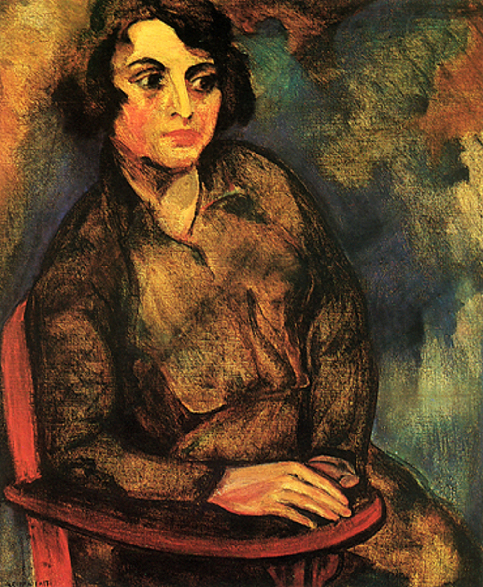
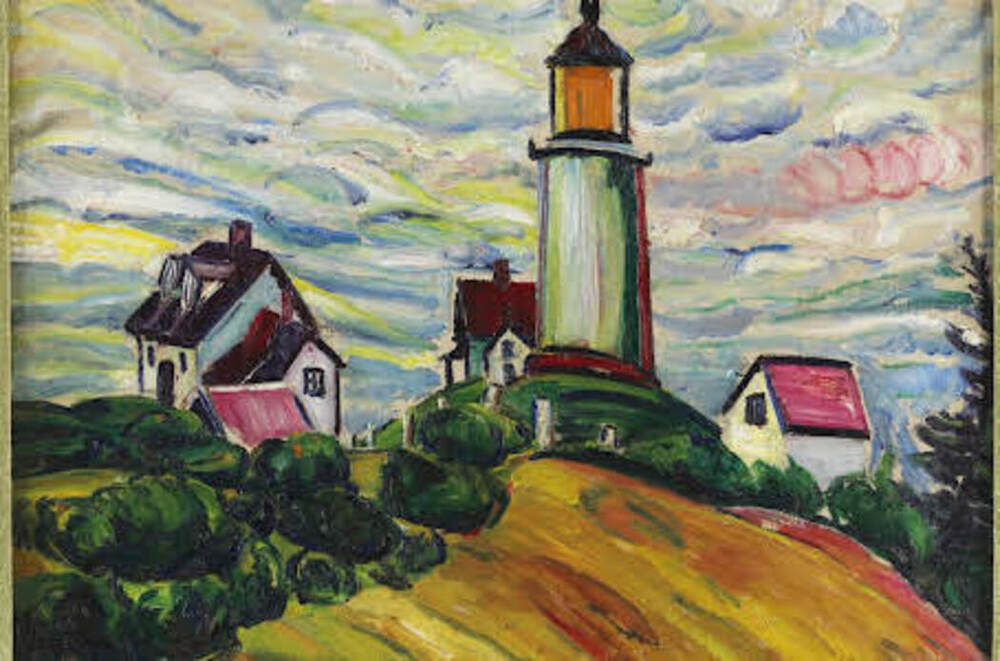
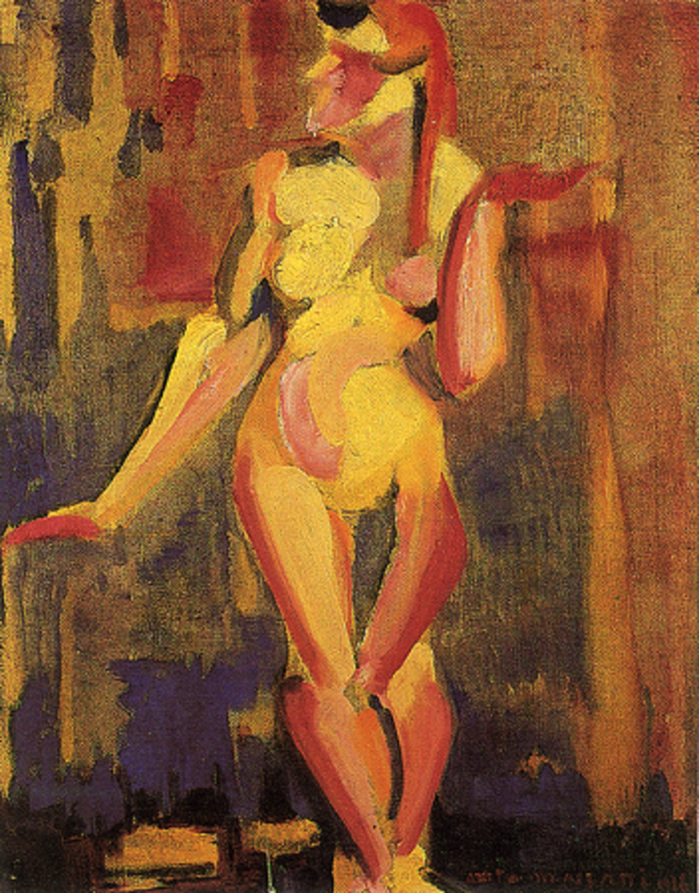
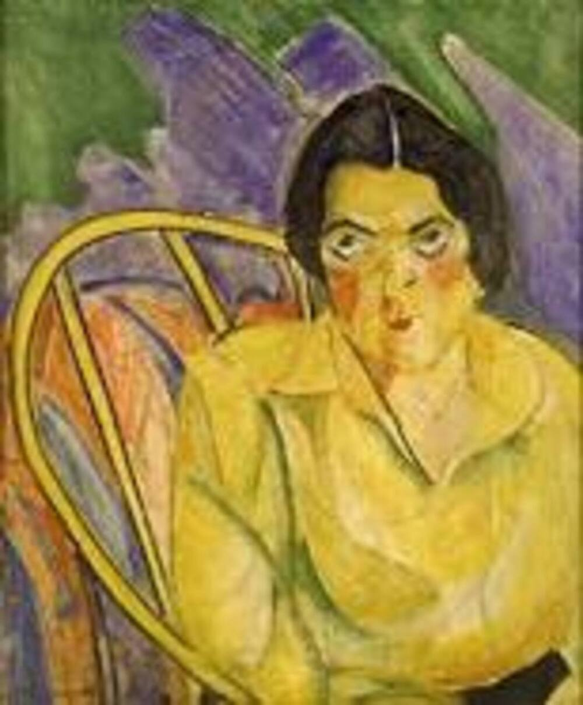

"O Homem Amarelo" é uma das obras mais emblemáticas de Anita Malfatti e desempenhou um papel fundamental na introdução do modernismo no Brasil. Aqui estão mais detalhes sobre essa pintura:
Data de Criação: "O Homem Amarelo" foi pintado em 1915, durante o período em que Anita Malfatti estudava arte na Europa, especificamente em Berlim.
Características Visuais: A obra apresenta um homem de pele amarela, o que é uma representação não naturalista da pele humana. Isso é um exemplo de como Malfatti explorou cores de maneira não convencional, desafiando as expectativas realistas da época.
Influência Expressionista: A pintura reflete a influência do expressionismo alemão, que Malfatti experimentou durante sua estadia em Berlim. O expressionismo valoriza a expressão emocional e a representação subjetiva da realidade, muitas vezes usando cores e formas exageradas para transmitir sentimentos e estados de espírito.
Controvérsia: "O Homem Amarelo" causou polêmica e críticas negativas quando foi exibido pela primeira vez em São Paulo em 1917. A ousadia de Malfatti em desafiar as convenções artísticas tradicionais e sua exploração de técnicas modernistas não convencionais foram recebidas com hostilidade por parte dos críticos conservadores e da sociedade brasileira da época.
Impacto na Arte Brasileira: Mesmo com a controvérsia, "O Homem Amarelo" e outras obras de Malfatti desempenharam um papel crucial na promoção do modernismo no Brasil. Ela abriu caminho para a aceitação de novas ideias artísticas e influenciou outros artistas brasileiros a explorarem o modernismo em suas próprias obras.
Legado: Hoje, "O Homem Amarelo" é reconhecido como um marco na história da arte brasileira e como uma das obras mais importantes de Anita Malfatti. Ela é lembrada como uma pioneira que contribuiu para a evolução da arte no Brasil, ajudando a quebrar barreiras e a introduzir o país no cenário artístico internacional do século XX.
Essa obra continua a ser estudada e apreciada por seu papel na transformação da arte brasileira e na promoção do modernismo como um movimento artístico influente no país.
Estudande Russa

"A Estudante Russa" é outra obra significativa de Anita Malfatti. Aqui estão mais detalhes sobre essa pintura:
Data de Criação: "A Estudante Russa" foi pintado em 1915, durante o período em que Anita Malfatti estudava arte na Europa, principalmente em Berlim. Esse período de formação artística no exterior teve um impacto profundo em seu estilo e abordagem artística.
Tema e Representação: A obra retrata uma estudante russa que Malfatti conheceu durante sua estadia em Berlim. O retrato captura a beleza e a jovialidade da estudante, demonstrando o interesse de Malfatti em representar a figura humana com detalhes impressionistas.
Influências Artísticas: "A Estudante Russa" reflete a influência do impressionismo em sua obra, uma técnica que ela estudou na Europa. O impressionismo valoriza a captura de momentos fugazes e a representação das mudanças de luz e cor. Isso é evidente na maneira como Malfatti retratou a estudante russa com pinceladas soltas e cores vivas.
Contexto Histórico: A pintura foi criada em um momento em que Malfatti estava absorvendo diversas influências artísticas europeias, incluindo o expressionismo alemão e o cubismo. Essas influências se misturaram em seu trabalho, resultando em uma abordagem única e eclética à arte.
Contribuição para o Modernismo Brasileiro: "A Estudante Russa" faz parte do conjunto de obras que Malfatti trouxe de volta ao Brasil após seu período de estudos na Europa. Ela exibiu essas pinturas em São Paulo em 1917, o que desencadeou a Semana de Arte Moderna de 1922. Essa exposição e seu trabalho contribuíram para a introdução do modernismo no Brasil, desafiando as normas artísticas estabelecidas e inspirando outros artistas a explorarem novas abordagens criativas.
Legado: "A Estudante Russa" é considerada uma das obras importantes de Anita Malfatti e é lembrada como parte fundamental de sua contribuição para o movimento modernista brasileiro. Sua influência e ousadia artística continuam a ser reconhecidas e estudadas na história da arte do Brasil.
Farol

"O Farol" é outra obra importante de Anita Malfatti. Aqui estão mais detalhes sobre essa pintura:
Data de Criação: "O Farol" foi pintado em 1921, em um período em que Anita Malfatti já havia retornado ao Brasil após seus estudos na Europa. Este foi um período de maturidade artística para a artista.
Tema e Representação: A obra retrata um farol, que é uma estrutura que guia os navegantes marítimos durante a noite. No entanto, em vez de retratar o farol de maneira realista, Malfatti abordou o tema de forma mais abstrata e modernista. Ela usou cores vibrantes e formas geométricas para representar o farol, explorando uma estética mais experimental em sua pintura.
Influências Artísticas: "O Farol" reflete a influência do cubismo em sua obra. O cubismo é um movimento artístico que busca representar objetos a partir de múltiplos pontos de vista e fragmentar formas em geometria abstrata. Malfatti empregou essas técnicas cubistas em sua representação do farol, desmontando-o em formas angulares e coloridas.
Abordagem Modernista: Assim como em muitas de suas obras, "O Farol" demonstra a abordagem modernista de Malfatti à arte. Ela não se limitava a seguir padrões artísticos tradicionais, mas buscava experimentar com cores, formas e técnicas inovadoras, desafiando as expectativas da época.
Contribuição para o Modernismo Brasileiro: Anita Malfatti desempenhou um papel fundamental na promoção do modernismo no Brasil, e obras como "O Farol" ajudaram a consolidar sua reputação como uma das artistas mais importantes desse movimento. Suas exposições e seu trabalho inspiraram outros artistas a explorarem novas linguagens e estilos artísticos no Brasil.
Legado: "O Farol" é uma das obras que contribuiu para a consolidação do legado de Anita Malfatti como uma figura pioneira na história da arte brasileira. Sua influência e contribuição para a arte modernista no Brasil continuam a ser reconhecidas e estudadas até hoje.
Nu(Estudo de Mulher)

Data de Criação: "Nu (Estudo de Mulher)" foi pintado em 1923, em um momento em que Anita Malfatti já havia retornado ao Brasil e estava em uma fase mais madura de sua carreira.
Tema e Representação: Como o título sugere, a obra representa uma figura feminina nua. No entanto, ao contrário das representações convencionais de nus na arte, Malfatti abordou esse tema de maneira mais abstrata e modernista. Ela utilizou formas geométricas e fragmentação para representar o corpo da mulher de uma maneira menos naturalista e mais inovadora.
Abordagem Modernista: Como muitas de suas obras, "Nu (Estudo de Mulher)" reflete a abordagem modernista de Malfatti. Ela não se limitava a seguir padrões artísticos tradicionais, mas buscava experimentar com cores, formas e técnicas inovadoras, desafiando as expectativas da época.
Boba

Data de Criação: "A Boba" foi pintado em 1917, durante um período em que Anita Malfatti estava de volta ao Brasil após seus estudos na Europa. Este foi um momento de grande efervescência artística no Brasil.
Tema e Representação: "A Boba" retrata uma figura feminina com traços faciais exagerados e expressivos. A figura é representada de maneira não convencional e surreal, com um olho maior que o outro e uma boca alongada. Essa representação destorcida e caricatural da figura humana é característica do expressionismo, movimento artístico que influenciou Malfatti.
Influências Artísticas: "A Boba" reflete a influência do expressionismo alemão em sua obra. O expressionismo valoriza a expressão emocional e a representação subjetiva da realidade, muitas vezes usando distorções e exageros para transmitir sentimentos intensos. Malfatti incorporou esses elementos em sua pintura, desafiando as convenções artísticas tradicionais.
Controvérsia: "A Boba" foi uma das obras que causou grande polêmica quando exposta em São Paulo em 1917. Críticos conservadores e parte da sociedade brasileira da época reagiram com hostilidade às inovações artísticas e à representação não convencional da figura humana. Essa controvérsia tornou Malfatti uma figura central na Semana de Arte Moderna de 1922, que marcou a consolidação do movimento modernista no Brasil.
Legado: "A Boba" é lembrada como uma das pinturas mais emblemáticas de Anita Malfatti e é vista como um símbolo de sua audácia artística e sua importância na história da arte brasileira. Ela continua a ser estudada e apreciada por sua contribuição para a evolução da arte no Brasil.